Справочник по Angular и React · модуль 2 · данные с сервера и ИИ-диспетчер
2.3
Загрузка данных:
загрузка и ошибка
В этой главе доска заявок перестаёт хранить заявки в localStorage и берёт их из PocketBase, который запущен в главе 2.2. Запросы к серверу собраны в отдельном файле api.ts. Список загружается эффектом из главы 2.1. Пока ответа нет, доска пишет «Загрузка заявок…». Если сервер не ответил, она показывает ошибку и кнопку «Повторить». В конце главы добавление, смена статуса и удаление заявок тоже уходят на сервер, и все браузеры видят одни и те же заявки.
- Категория
- React, работа с сервером
- Уровень
- Начальный
- Что понадобится
- Проект
zayavkiпосле главы 2.1 и PocketBase с коллекциейrequestsпосле главы 2.2 (пять заявок, правила доступа настроены) - Результат
- Доска показывает заявки из PocketBase, сообщает о загрузке и ошибке, все изменения сохраняются в базе
§1Три состояния загрузки
РазбираемсяЧто видно, пока ответа нет
В главе 1.7 список заявок брался из localStorage. Это хранилище внутри браузера, и чтение из него занимает доли миллисекунды: список готов уже к первой отрисовке. Сервер устроен иначе. Запрос уходит по сети, PocketBase ищет записи в базе и присылает ответ. На это уходят миллисекунды на своём компьютере и секунды на медленном мобильном интернете. А ответа может и не быть: сервер выключен или сеть пропала.
В приложении доставки после заказа экран не пустой: на нём «Готовим заказ». Когда курьер забрал заказ, экран показывает, что везут. Если ресторан закрыт, приложение пишет «Ресторан не отвечает» и даёт кнопку «Попробовать снова». Покупатель всегда понимает, что происходит.
В приложении доставки статус присылает ресторан. На доске состояние задаёт её собственный код: переменные loading и error.
Поэтому у списка, который приходит с сервера, три состояния загрузки:
- загрузка — запрос отправлен, ответа ещё нет. Доска пишет «Загрузка заявок…»;
- ошибка — ответа не будет или сервер отказал. Доска пишет, что случилось, и показывает кнопку «Повторить»;
- данные — ответ пришёл, доска показывает карточки.
Запрос к серверу — тоже действие «вне отрисовки», как заголовок вкладки в главе 2.1. Его отправляет эффект после первой отрисовки. На схеме — что происходит от открытия страницы до карточек.
Загрузка заявок: от первой отрисовки до карточек
Чёрная стрелка — запрос дошёл и сервер ответил. Пунктир — ответа нет. В обоих случаях loading становится false, и доска перестаёт писать «Загрузка заявок…».
Из схемы видно, что состояний у доски теперь больше: кроме списка заявок, ей нужно помнить, идёт ли загрузка и какая случилась ошибка.
Запросы к PocketBase будут нужны в нескольких местах: загрузить список, добавить, изменить, удалить. Их собирают в отдельный файл.
§2Файл запросов api.ts
ДелаемСоздаём файл с функцией загрузки
- Создайте файл
В папке
zayavki/srcсоздайте файлapi.ts. Вставьте код и сохраните. Остальной проект пока не меняется: файл ещё никто не использует.zayavki/src/api.ts import type { RequestItem } from './requests' const API_URL = 'http://localhost:8090/api/collections/requests/records' async function callApi(url: string, options?: RequestInit): Promise<Response> { let response: Response try { response = await fetch(url, options) } catch { throw new Error('Сервер заявок не отвечает. Проверьте, что PocketBase запущен.') } if (!response.ok) { throw new Error(`Сервер отклонил запрос: код ${response.status}.`) } return response } export async function fetchRequests(): Promise<RequestItem[]> { const response = await callApi(`${API_URL}?sort=-created`) const data = await response.json() return data.items }
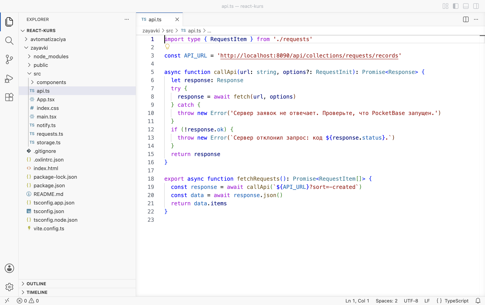
Новый файл src/api.ts
РазбираемсяЧто записано в api.ts
import type { RequestItem } from './requests' const API_URL = 'http://localhost:8090/api/collections/requests/records' 1 async function callApi(url: string, options?: RequestInit): Promise<Response> { 2 let response: Response try { response = await fetch(url, options) 3 } catch { throw new Error('Сервер заявок не отвечает. Проверьте, что PocketBase запущен.') 4 } if (!response.ok) { 5 throw new Error(`Сервер отклонил запрос: код ${response.status}.`) } return response 6 } export async function fetchRequests(): Promise<RequestItem[]> { const response = await callApi(`${API_URL}?sort=-created`) 7 const data = await response.json() return data.items 8 }
- 1
Адрес коллекции заявок в API PocketBase — тот же, что открывался в браузере в главе 2.2. Он записан один раз в константе, чтобы не повторять его в каждой функции.
- 2
callApi— общая функция для всех запросов. Она принимает адрес иoptions— настройки запроса: метод, заголовки, тело. Тип настроекRequestInitвстроен в TypeScript. Знак?после имени означает, что настройки можно не передавать: тогда это запрос GET. Функция возвращает ответ сервера, типResponse. - 3
Отправить запрос и дождаться ответа. Если сервер выключен или сеть недоступна, ответа нет совсем, и
fetchзавершается ошибкой. Эту ошибку ловитcatch, как вnotify.tsиз главы 1.7. - 4
throw new Error('…')— выбросить ошибку с понятным текстом.throwостанавливает функцию и передаёт ошибку тому, кто её вызвал. Ошибка поднимается по цепочке вызовов, пока её не поймает какой-нибудьcatch. Здесь вместо технического «Failed to fetch» дальше уходит фраза для человека. - 5
Ответ пришёл, но это может быть отказ: 403, 404, 400 из главы 2.2. При таком ответе
fetchошибку не выбрасывает. Он возвращает ответ с кодом.response.okравноtrueдля кодов от 200 до 299 — «запрос выполнен».!перед ним — «не». Если запрос не выполнен, функция выбрасывает ошибку с кодом. - 6
Сюда функция доходит, только если ответ пришёл и код хороший.
- 7
fetchRequests— загрузить список заявок. К адресу добавлено?sort=-created: «отсортировать по времени создания, минус — от новых к старым». Новая заявка окажется вверху, как раньше на доске. - 8
response.json()превращает текст ответа в объект. В ответе PocketBase, как на кадре главы 2.2, есть служебные поляpage,perPage,totalItems, а сами заявки лежат вitems. Функция возвращает только их.
Слово export стоит только у fetchRequests: остальные файлы проекта будут вызывать её, а callApi нужна только внутри api.ts. Неудачи бывают двух видов, и callApi превращает обе в ошибку с понятным текстом:
| Что случилось | Что делает fetch | Какую ошибку выбрасывает callApi |
|---|---|---|
| PocketBase выключен, сети нет | Ответа нет, fetch выбрасывает ошибку | «Сервер заявок не отвечает. Проверьте, что PocketBase запущен.» (строка 10) |
| Правило отказало (403, 404, 400) | Возвращает ответ, response.ok — false | «Сервер отклонил запрос: код 403.» (строка 13) |
| Запрос выполнен (200) | Возвращает ответ, response.ok — true | Никакую: функция возвращает ответ |
Функция загрузки готова. Теперь доска должна вызвать её после первой отрисовки, а данные из localStorage больше не нужны.
§3Загрузка в эффекте
ДелаемДоска берёт заявки с сервера
- Удалите storage.ts
Заявки больше не хранятся в localStorage. В проводнике щёлкните правой кнопкой по
src/storage.tsи выберите Delete, затем подтвердите удаление. VS Code подчеркнётApp.tsxкрасным: он ещё ссылается на удалённый файл. Это исправит шаг 3. - Замените requests.ts
У записей PocketBase
id— строка из 15 символов, поэтому типidменяется наstring. СписокinitialRequestsудалён: начальные заявки теперь лежат в базе. Изменённая строка подсвечена.zayavki/src/requests.ts export type Status = 'Новая' | 'В работе' | 'Готово' export type Category = 'Компьютер' | 'Проектор' | 'Принтер' | 'Интернет' export type RequestItem = { id: string title: string room: string category: Category details: string status: Status } export type NewRequest = { title: string room: string category: Category details: string } export function nextStatus(status: Status): Status { if (status === 'Новая') { return 'В работе' } return 'Готово' }
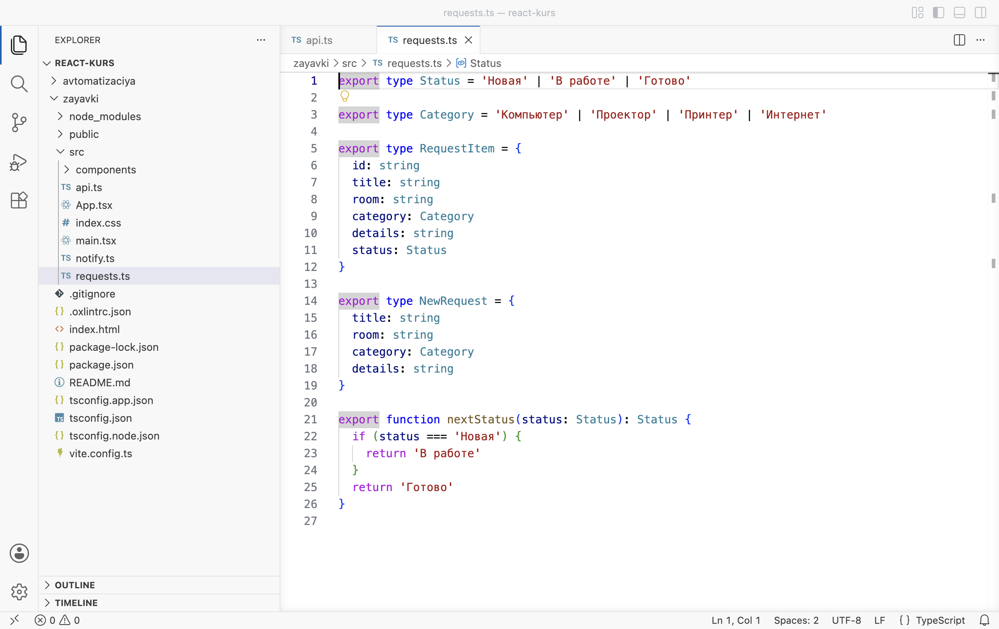
requests.ts: id — строка; в папке src нет storage.ts - Замените App.tsx
Замените содержимое
src/App.tsx. Изменённые строки подсвечены: импортfetchRequests, пустой начальный список, состояниеloading, эффект загрузки и надпись «Загрузка заявок…». ВhandleAddномер новой заявки превращается в строку:String(Date.now()).zayavki/src/App.tsx import { useEffect, useState } from 'react' import Header from './components/Header' import RequestForm from './components/RequestForm' import RequestCard from './components/RequestCard' import { nextStatus, type NewRequest, type RequestItem, type Status } from './requests' import { fetchRequests } from './api' import { sendRequest } from './notify' type Filter = 'Все' | Status const FILTERS: Filter[] = ['Все', 'Новая', 'В работе', 'Готово'] function App() { const [requests, setRequests] = useState<RequestItem[]>([]) const [loading, setLoading] = useState(true) const [filter, setFilter] = useState<Filter>('Все') const [notice, setNotice] = useState('') const newCount = requests.filter((r) => r.status === 'Новая').length const visible = filter === 'Все' ? requests : requests.filter((r) => r.status === filter) useEffect(() => { let ignore = false async function load() { const list = await fetchRequests() if (!ignore) { setRequests(list) setLoading(false) } } load() return () => { ignore = true } }, []) useEffect(() => { document.title = `Новых: ${newCount} · Доска заявок` }, [newCount]) useEffect(() => { if (notice === '') { return } const timer = setTimeout(() => setNotice(''), 5000) return () => clearTimeout(timer) }, [notice]) useEffect(() => { function handleKey(event: KeyboardEvent) { if (event.key === 'Escape') { setFilter('Все') } } window.addEventListener('keydown', handleKey) return () => window.removeEventListener('keydown', handleKey) }, []) function handleNext(id: string) { const updated = requests.map((r) => { if (r.id === id) { return { ...r, status: nextStatus(r.status) } } return r }) setRequests(updated) } async function handleAdd(data: NewRequest) { const created: RequestItem = { ...data, id: String(Date.now()), status: 'Новая' } setRequests([created, ...requests]) setNotice('Заявка добавлена. Отправляем уведомление…') const sent = await sendRequest(created) if (sent) { setNotice('Заявка добавлена, уведомление отправлено.') } else { setNotice('Заявка добавлена, но уведомление не отправлено: сервер автоматизации недоступен.') } } function handleRemove(id: string) { setRequests(requests.filter((r) => r.id !== id)) } return ( <> <Header newCount={newCount} /> <main className="board"> <RequestForm onAdd={handleAdd} /> <section className="list"> <h2>Заявки</h2> {notice !== '' && <p className="notice">{notice}</p>} <div className="filters"> {FILTERS.map((f) => ( <button key={f} className={f === filter ? 'active' : ''} onClick={() => setFilter(f)}> {f} </button> ))} </div> {loading && <p className="empty">Загрузка заявок…</p>} {!loading && visible.length === 0 && <p className="empty">Заявок с таким статусом нет</p>} {visible.map((r) => ( <RequestCard key={r.id} title={r.title} room={r.room} category={r.category} details={r.details} status={r.status} onNext={() => handleNext(r.id)} onRemove={() => handleRemove(r.id)} /> ))} </section> </main> </> ) } export default App
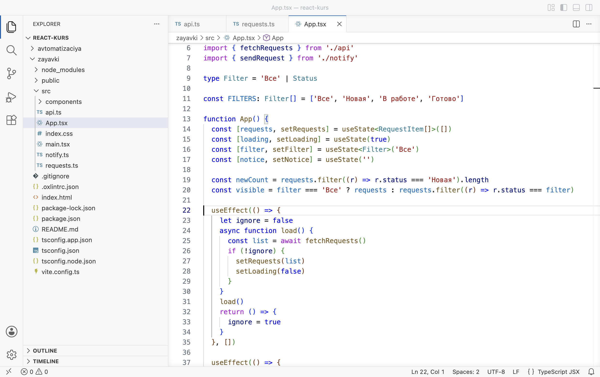
App.tsx: эффект загрузки, строки 22–35 - Откройте доску
Проверьте, что PocketBase запущен (в Docker Desktop контейнер
avtomatizaciya-pocketbase-1работает). Откройтеhttp://localhost:5173/и обновите страницу (F5). На доске пять заявок из базы, все со статусом «Новая». Сверху — последняя созданная в главе 2.2, «Не работает мышь».
Доска показывает заявки из PocketBase
РазбираемсяЧто записано в эффекте
const [requests, setRequests] = useState<RequestItem[]>([]) 1 const [loading, setLoading] = useState(true) 2 const [filter, setFilter] = useState<Filter>('Все') const [notice, setNotice] = useState('') const newCount = requests.filter((r) => r.status === 'Новая').length const visible = filter === 'Все' ? requests : requests.filter((r) => r.status === filter) useEffect(() => { 3 let ignore = false 4 async function load() { 5 const list = await fetchRequests() 6 if (!ignore) { 7 setRequests(list) setLoading(false) } } load() 8 return () => { 9 ignore = true } }, []) 10
- 1
Список заявок в начале пустой:
[]. Раньше начальное значение давала функцияloadRequestsиз localStorage.<RequestItem[]>подсказывает TypeScript, что в пустом массиве будут заявки. - 2
loading— «идёт загрузка». В началеtrue: страница открылась, а ответа ещё нет. - 3
Эффект с пустым массивом зависимостей: он запускается один раз после первой отрисовки, как подписка на клавишу Esc в главе 2.1.
- 4
Флажок «результат этого запуска больше не нужен». Пока он
false, ответ сервера попадёт в состояние. Зачем он, показывает пошаговый разбор ниже. - 5
Внутри эффекта объявлена асинхронная функция
load. Саму функцию эффекта сделатьasyncнельзя: она может вернуть только функцию очистки или ничего, аasync-функция всегда возвращает обещание ответа. Поэтомуawaitживёт во внутренней функции. - 6
Дождаться списка с сервера.
- 7
Если флажок не поднят, сохранить список и выключить загрузку. Обе смены состояния — после
await, то есть уже после отрисовки, поэтому правило линтера из главы 2.1 про смену состояния в эффекте здесь не срабатывает. - 8
Запустить
load. Эффект на этом заканчивается и возвращает очистку, а ответ сервераloadобработает позже. - 9
Функция очистки поднимает флажок: «ответ этого запуска не нужен».
- 10
Пустой массив: повторно эффект не запускается.
В режиме разработки React запускает эффект дважды: запускает, сразу очищает и запускает снова (глава 2.1, StrictMode). Значит, запросов к серверу тоже два. Проверим это на вкладке Network.
ДелаемОпыт: запросы на вкладке Network
- Откройте вкладку Network
Нажмите F12 и откройте вкладку Network — журнал всех запросов страницы. В строке фильтров нажмите Fetch/XHR: останутся только запросы, отправленные кодом страницы.
- Замедлите ответ
В списке No throttling выберите 3G — так браузер изобразит медленный мобильный интернет. Обновите страницу (F5). Пока ответ идёт, на доске надпись «Загрузка заявок…», а в журнале — два запроса
records?sort=-createdв состоянии pending, «ожидает ответа».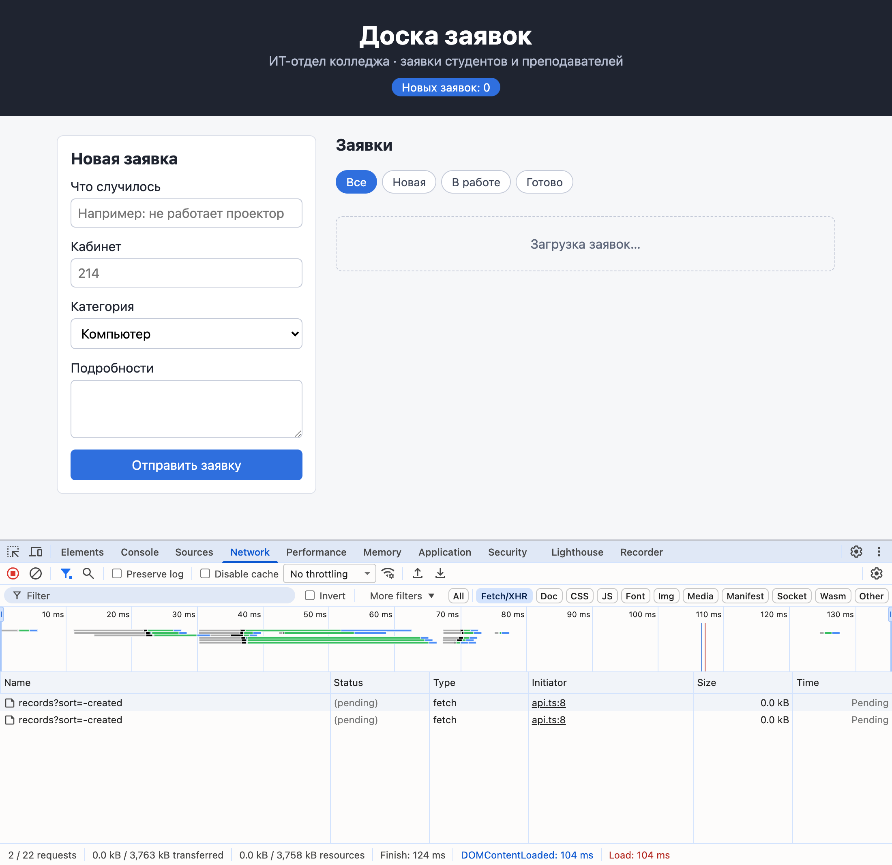
Ответ ещё не пришёл: «Загрузка заявок…», оба запроса ждут ответа. На кадре сервер задерживал ответ сам, поэтому в списке скорости — No throttling - Верните скорость
Выберите в списке снова No throttling и обновите страницу. Оба запроса завершились с кодом 200, на доске пять карточек.
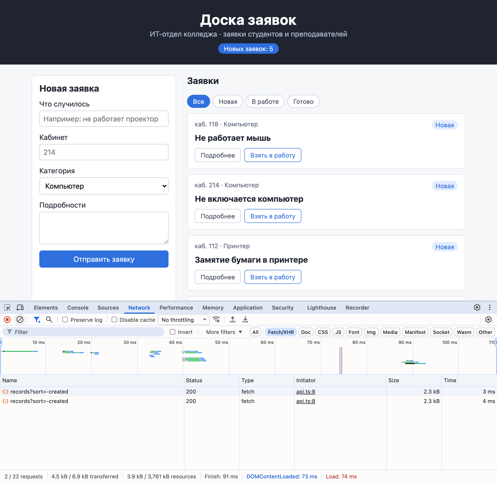
Два запроса со статусом 200: эффект запустился дважды
РазбираемсяКакой ответ попадает на доску
Ответов два, а список должен сохраниться один раз. Флажок ignore отбрасывает ответ запуска, который React уже очистил. У каждого запуска эффекта свой флажок: let ignore создаётся заново при каждом запуске, а очистка поднимает флажок только своего запуска.
useEffect(() => { let ignore = false async function load() { const list = await fetchRequests() if (!ignore) { setRequests(list) setLoading(false) } } load() return () => { ignore = true } }, [])
- Первая отрисовка
Список пустой,
loading—true. На доске «Загрузка заявок…». После отрисовки React запускает эффект.requests[]loadingtrue - Запуск А
Создан флажок А, функция
loadотправила запрос А.ignore Аfalse - Очистка А
StrictMode сразу очищает эффект: флажок А поднят. Запрос А уже отправлен, отменить его нельзя.
ignore Аtrue - Запуск Б
Эффект запускается снова: новый флажок Б, запрос Б.
ignore Аtrueignore Бfalse - Пришёл ответ А
Флажок А поднят:
!ignore—false, состояние не меняется. - Пришёл ответ Б
Флажок Б опущен: список сохраняется, загрузка выключается. React отрисовывает пять карточек.
requests5 заявокloadingfalse
В собранном для пользователей приложении эффект запускается один раз, и запрос тоже один. Флажок нужен и там. Если зависимость эффекта изменится, пока ответ ещё идёт, старый ответ может прийти позже нового и затереть его. Флажок отбрасывает ответы запусков, которые уже не нужны.
Доска показывает заявки из базы. Но изменения пока остаются только в памяти браузера: handleAdd, handleNext и handleRemove меняют состояние и ничего не отправляют на сервер. Это видно по опыту.
ДелаемОпыт: заявка без сервера
- Добавьте заявку
Закройте DevTools. Заполните форму: «Не печатает принтер», кабинет 112, категория «Принтер». Нажмите Отправить заявку. Заявка появилась сверху.
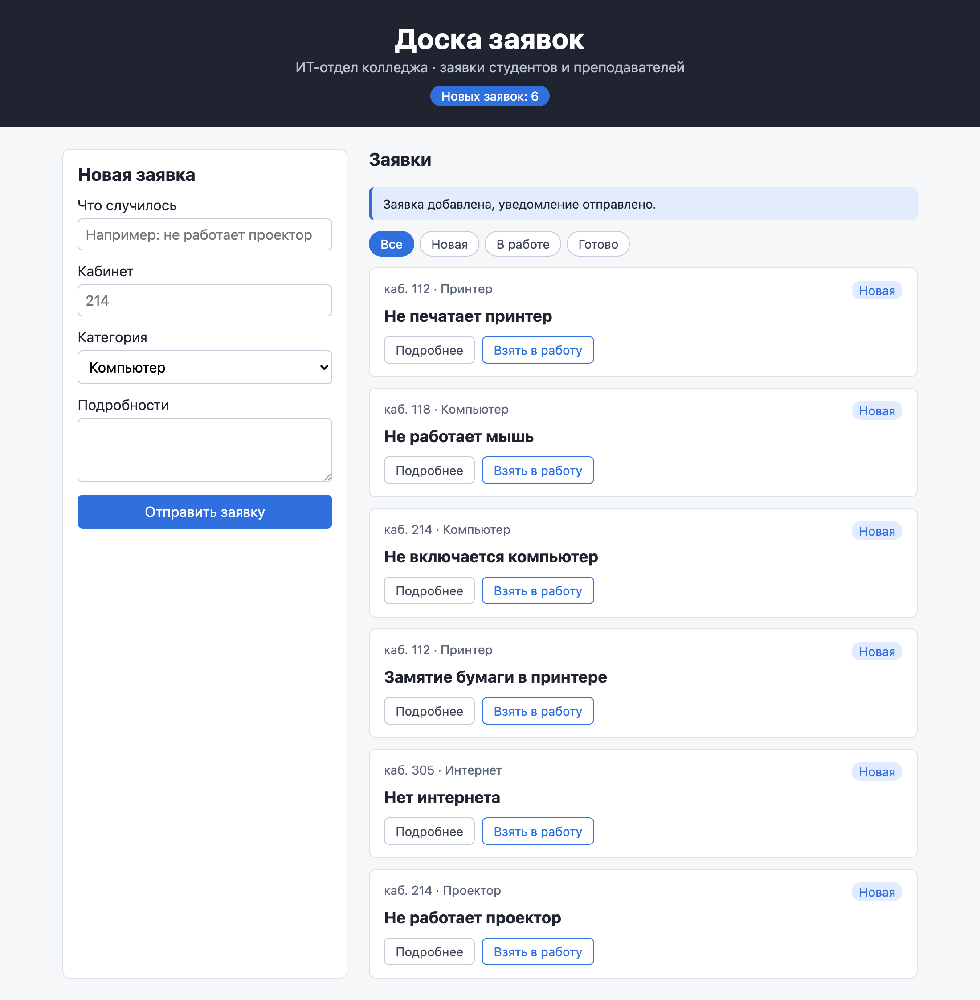
Новая заявка на доске, новых — 6 - Обновите страницу
Нажмите F5. Новой заявки нет, снова пять.
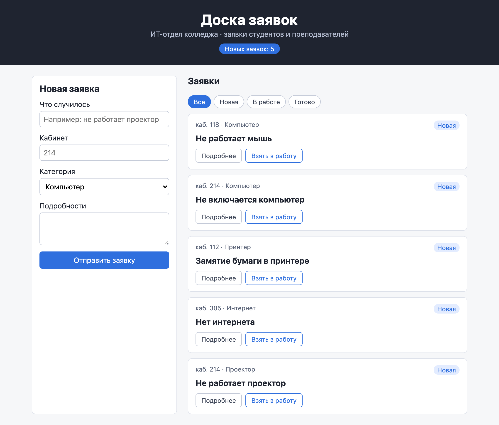
После F5 заявка пропала: в базу она не попала
РазбираемсяПочему заявка пропала
После обновления страницы доска заново загружает список с сервера, а в базе новой заявки нет. handleAdd положил её только в состояние, то есть в память открытой вкладки. Раньше это исправлял localStorage, теперь хранилище одно — PocketBase. Добавление, смену статуса и удаление тоже нужно отправлять на сервер. Это сделает §5.
Сначала нужно разобраться с запросом, на который сервер не ответил: в коде загрузки этот случай пока не обработан.
§4Когда сервер не ответил
ДелаемОпыт: PocketBase выключен
- Остановите PocketBase
Откройте второй терминал (Terminal → New Terminal): в первом работает
npm run dev. Выполните команды.stopостанавливает контейнер, данные в томе остаются.Терминал · папка react-kurs cd avtomatizaciya docker compose stop pocketbase
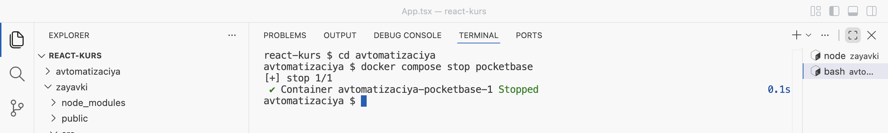
Контейнер PocketBase остановлен - Обновите доску с открытой консолью
Нажмите F12, откройте вкладку Console и обновите страницу (F5). Надпись «Загрузка заявок…» не исчезает. В консоли красные ошибки.
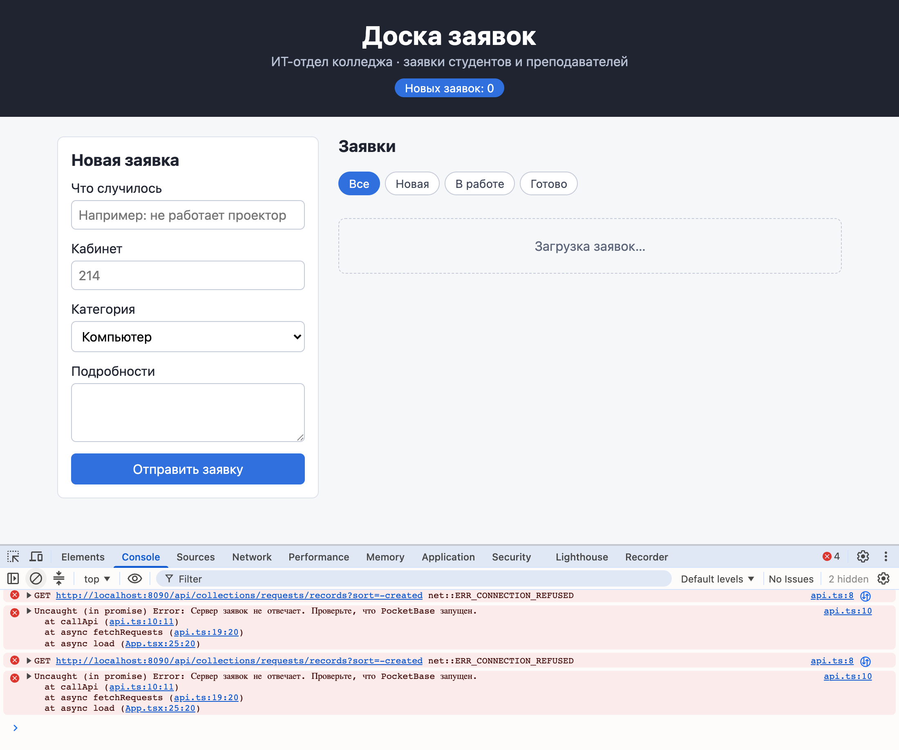
Загрузка не заканчивается; в консоли ERR_CONNECTION_REFUSED и Uncaught (in promise) Error
РазбираемсяПочему загрузка не заканчивается
net::ERR_CONNECTION_REFUSED — «в соединении отказано»: по адресу localhost:8090 никто не принимает запросы. fetch выбросил ошибку, callApi поймал её и выбросил свою, с понятным текстом. Дальше ошибка поднялась в load, а там её никто не ловит: в эффекте нет try и catch. Браузер пишет об этом Uncaught (in promise) Error — «непойманная ошибка в асинхронной функции». Функция load остановилась на строке с await, и setLoading(false) не выполнился. Для доски загрузка так и идёт. Ошибок по две — по одной на каждый запуск эффекта.
Студент, который открыл доску, консоль не видит. Ему ошибку нужно показать на странице и дать способ попробовать снова.
ДелаемОшибка на странице и кнопка «Повторить»
- Добавьте стили блока ошибки
Замените содержимое
src/index.css. В конец файла добавлены стили блока.load-error.zayavki/src/index.css :root { font-family: system-ui, 'Segoe UI', Roboto, sans-serif; color: #1f2430; background: #f6f7f9; } body { margin: 0; } .header { padding: 24px 20px; background: #1f2430; color: #ffffff; text-align: center; } .header h1 { margin: 0 0 4px; } .header p { margin: 0; color: #b8c0d4; } .board { display: grid; grid-template-columns: 320px 1fr; gap: 24px; max-width: 960px; margin: 0 auto; padding: 24px 20px; } .form { display: flex; flex-direction: column; gap: 6px; padding: 16px; background: #ffffff; border: 1px solid #dde1ea; border-radius: 8px; } .form h2, .list h2 { margin: 0 0 8px; font-size: 20px; } .form input, .form select, .form textarea { margin-bottom: 8px; padding: 8px; border: 1px solid #c4cad8; border-radius: 6px; font: inherit; } .form button { padding: 10px; border: 0; border-radius: 6px; background: #2f6fde; color: #ffffff; font: inherit; cursor: pointer; } .list { display: flex; flex-direction: column; gap: 12px; } .card { padding: 14px 16px; background: #ffffff; border: 1px solid #dde1ea; border-radius: 8px; } .card__top { display: flex; justify-content: space-between; font-size: 14px; } .card__room { color: #5b6478; } .card__status { padding: 2px 8px; border-radius: 10px; background: #e3ecff; color: #2f6fde; } .card h3 { margin: 8px 0 4px; font-size: 18px; } .card p { margin: 0; color: #3d4557; } @media (max-width: 700px) { .board { grid-template-columns: 1fr; } } .card button { margin-top: 12px; padding: 6px 12px; border: 1px solid #2f6fde; border-radius: 6px; background: #ffffff; color: #2f6fde; font: inherit; font-size: 14px; cursor: pointer; } .card button:disabled { border-color: #c4cad8; color: #8a93a6; cursor: default; } .header__count { display: inline-block; margin-top: 12px; padding: 3px 12px; border-radius: 12px; background: #2f6fde; font-size: 14px; } .card__actions { display: flex; gap: 8px; margin-top: 12px; } .card__actions button { margin-top: 0; } .card__actions .card__more { border-color: #c4cad8; color: #3d4557; } .empty { padding: 24px; border: 1px dashed #c4cad8; border-radius: 8px; color: #5b6478; text-align: center; } .filters { display: flex; flex-wrap: wrap; gap: 6px; } .filters button { padding: 5px 12px; border: 1px solid #c4cad8; border-radius: 16px; background: #ffffff; color: #3d4557; font: inherit; font-size: 14px; cursor: pointer; } .filters button.active { border-color: #2f6fde; background: #2f6fde; color: #ffffff; } .form__error { margin: 0 0 8px; padding: 8px; border-radius: 6px; background: #fde8e8; color: #b42318; font-size: 14px; } .notice { margin: 0; padding: 10px 12px; border-left: 4px solid #2f6fde; border-radius: 6px; background: #e3ecff; color: #1f2430; font-size: 14px; } .load-error { padding: 16px; border: 1px solid #f3b8b8; border-radius: 8px; background: #fde8e8; color: #b42318; } .load-error p { margin: 0 0 10px; } .load-error button { padding: 6px 14px; border: 1px solid #b42318; border-radius: 6px; background: #ffffff; color: #b42318; font: inherit; cursor: pointer; } - Замените App.tsx
Изменённые строки подсвечены: состояния
errorиattempt,tryиcatchв эффекте, функцияretryи блок ошибки с кнопкой.zayavki/src/App.tsx import { useEffect, useState } from 'react' import Header from './components/Header' import RequestForm from './components/RequestForm' import RequestCard from './components/RequestCard' import { nextStatus, type NewRequest, type RequestItem, type Status } from './requests' import { fetchRequests } from './api' import { sendRequest } from './notify' type Filter = 'Все' | Status const FILTERS: Filter[] = ['Все', 'Новая', 'В работе', 'Готово'] function App() { const [requests, setRequests] = useState<RequestItem[]>([]) const [loading, setLoading] = useState(true) const [error, setError] = useState('') const [attempt, setAttempt] = useState(0) const [filter, setFilter] = useState<Filter>('Все') const [notice, setNotice] = useState('') const newCount = requests.filter((r) => r.status === 'Новая').length const visible = filter === 'Все' ? requests : requests.filter((r) => r.status === filter) useEffect(() => { let ignore = false async function load() { try { const list = await fetchRequests() if (!ignore) { setRequests(list) } } catch (e) { if (!ignore) { setError((e as Error).message) } } if (!ignore) { setLoading(false) } } load() return () => { ignore = true } }, [attempt]) useEffect(() => { document.title = `Новых: ${newCount} · Доска заявок` }, [newCount]) useEffect(() => { if (notice === '') { return } const timer = setTimeout(() => setNotice(''), 5000) return () => clearTimeout(timer) }, [notice]) useEffect(() => { function handleKey(event: KeyboardEvent) { if (event.key === 'Escape') { setFilter('Все') } } window.addEventListener('keydown', handleKey) return () => window.removeEventListener('keydown', handleKey) }, []) function retry() { setError('') setLoading(true) setAttempt(attempt + 1) } function handleNext(id: string) { const updated = requests.map((r) => { if (r.id === id) { return { ...r, status: nextStatus(r.status) } } return r }) setRequests(updated) } async function handleAdd(data: NewRequest) { const created: RequestItem = { ...data, id: String(Date.now()), status: 'Новая' } setRequests([created, ...requests]) setNotice('Заявка добавлена. Отправляем уведомление…') const sent = await sendRequest(created) if (sent) { setNotice('Заявка добавлена, уведомление отправлено.') } else { setNotice('Заявка добавлена, но уведомление не отправлено: сервер автоматизации недоступен.') } } function handleRemove(id: string) { setRequests(requests.filter((r) => r.id !== id)) } return ( <> <Header newCount={newCount} /> <main className="board"> <RequestForm onAdd={handleAdd} /> <section className="list"> <h2>Заявки</h2> {notice !== '' && <p className="notice">{notice}</p>} <div className="filters"> {FILTERS.map((f) => ( <button key={f} className={f === filter ? 'active' : ''} onClick={() => setFilter(f)}> {f} </button> ))} </div> {loading && <p className="empty">Загрузка заявок…</p>} {error !== '' && ( <div className="load-error"> <p>{error}</p> <button onClick={retry}>Повторить</button> </div> )} {!loading && error === '' && visible.length === 0 && <p className="empty">Заявок с таким статусом нет</p>} {visible.map((r) => ( <RequestCard key={r.id} title={r.title} room={r.room} category={r.category} details={r.details} status={r.status} onNext={() => handleNext(r.id)} onRemove={() => handleRemove(r.id)} /> ))} </section> </main> </> ) } export default App
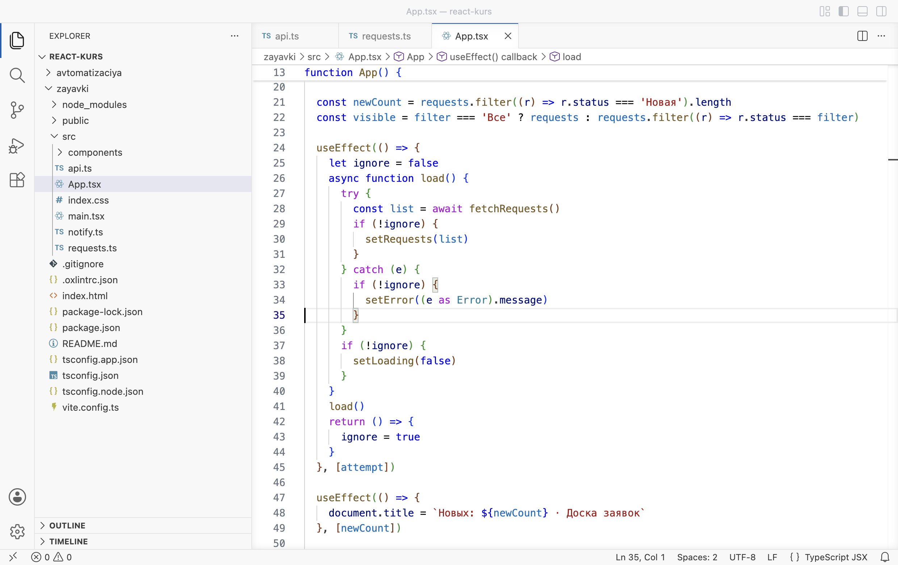
Эффект загрузки с try и catch, зависимость [attempt] - Обновите доску
PocketBase всё ещё выключен. Закройте DevTools и обновите страницу (F5). Вместо вечной загрузки — сообщение и кнопка Повторить.
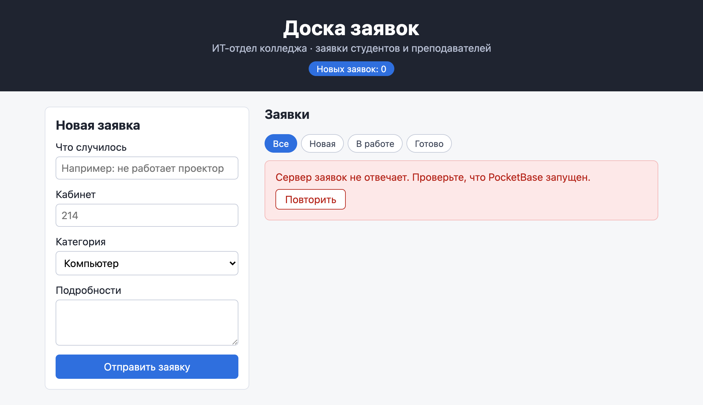
Ошибка загрузки на странице - Запустите PocketBase
Во втором терминале выполните команду.
Терминал · папка avtomatizaciya docker compose start pocketbase
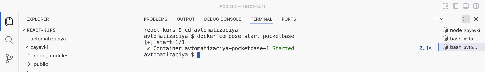
PocketBase снова работает - Нажмите «Повторить»
Страницу не обновляйте — нажмите кнопку Повторить. Доска снова загрузила пять заявок.

После «Повторить» заявки загружены
РазбираемсяКак ловится ошибка и как работает «Повторить»
useEffect(() => { let ignore = false async function load() { try { 1 const list = await fetchRequests() if (!ignore) { setRequests(list) } } catch (e) { 2 if (!ignore) { setError((e as Error).message) 3 } } if (!ignore) { 4 setLoading(false) } } load() return () => { ignore = true } }, [attempt]) 5
- 1
try— «попробуй выполнить». Если внутри блока выброшена ошибка, выполнение сразу переходит вcatch. - 2
catch (e)ловит ошибку,e— сама ошибка. Здесь её поймаетload: та, что выбросилcallApi, поднялась черезfetchRequestsсюда. - 3
Сохранить текст ошибки в состоянии. Для TypeScript тип ошибки неизвестен: выбросить можно что угодно, даже число. Запись
e as Errorговорит ему: «это объект ошибки». Так можно писать, потому чтоcallApiвсегда выбрасываетnew Error(…). У объекта ошибки есть полеmessage— текст, переданный в скобках. - 4
Эта строка стоит после
tryиcatchи выполняется в обоих случаях: пришёл список или случилась ошибка. Загрузка закончилась. - 5
Эффект зависит от
attempt— номера попытки. Внутри эффектаattemptне читается. Он нужен только затем, чтобы эффект запустился снова, когда номер изменится.
function retry() { setError('') setLoading(true) setAttempt(attempt + 1) }
Кнопка «Повторить» вызывает retry. Функция стирает ошибку, снова включает загрузку и увеличивает номер попытки. Зависимость attempt изменилась (была 0, стала 1), поэтому после отрисовки React запускает эффект загрузки ещё раз. Так же в главе 2.1 эффект заголовка запускался при каждом новом newCount.
Что показывает список заявок, зависит от трёх переменных состояния. В таблице — все сочетания, которые встречаются на доске.
| Момент | loading | error | requests | Что на доске |
|---|---|---|---|---|
| Страница открылась, ответа нет | true | '' | [] | «Загрузка заявок…» |
| Сервер не ответил | false | текст ошибки | [] | Ошибка и кнопка «Повторить» |
| Нажата «Повторить» | true | '' | [] | «Загрузка заявок…» |
| Список пришёл | false | '' | 5 заявок | Пять карточек |
| Фильтр без подходящих заявок | false | '' | 5 заявок | «Заявок с таким статусом нет» |
Поэтому надпись «Заявок с таким статусом нет» показывается только при трёх условиях сразу: загрузка закончилась, ошибки нет, подходящих заявок нет (строка 123). Без первых двух условий она появлялась бы во время загрузки и рядом с ошибкой.
Загрузка обработана во всех трёх состояниях. Осталось отправлять на сервер изменения: новую заявку, новый статус и удаление.
§5Изменения на сервере
ДелаемДобавление, статус и удаление через PocketBase
- Дополните api.ts
Замените содержимое
src/api.ts. Добавлены три функции: создать, изменить статус, удалить.zayavki/src/api.ts import type { NewRequest, RequestItem, Status } from './requests' const API_URL = 'http://localhost:8090/api/collections/requests/records' async function callApi(url: string, options?: RequestInit): Promise<Response> { let response: Response try { response = await fetch(url, options) } catch { throw new Error('Сервер заявок не отвечает. Проверьте, что PocketBase запущен.') } if (!response.ok) { throw new Error(`Сервер отклонил запрос: код ${response.status}.`) } return response } export async function fetchRequests(): Promise<RequestItem[]> { const response = await callApi(`${API_URL}?sort=-created`) const data = await response.json() return data.items } export async function createRequest(data: NewRequest): Promise<RequestItem> { const response = await callApi(API_URL, { method: 'POST', headers: { 'Content-Type': 'application/json' }, body: JSON.stringify({ ...data, status: 'Новая' }), }) return response.json() } export async function updateStatus(id: string, status: Status): Promise<RequestItem> { const response = await callApi(`${API_URL}/${id}`, { method: 'PATCH', headers: { 'Content-Type': 'application/json' }, body: JSON.stringify({ status }), }) return response.json() } export async function deleteRequest(id: string): Promise<void> { await callApi(`${API_URL}/${id}`, { method: 'DELETE' }) }
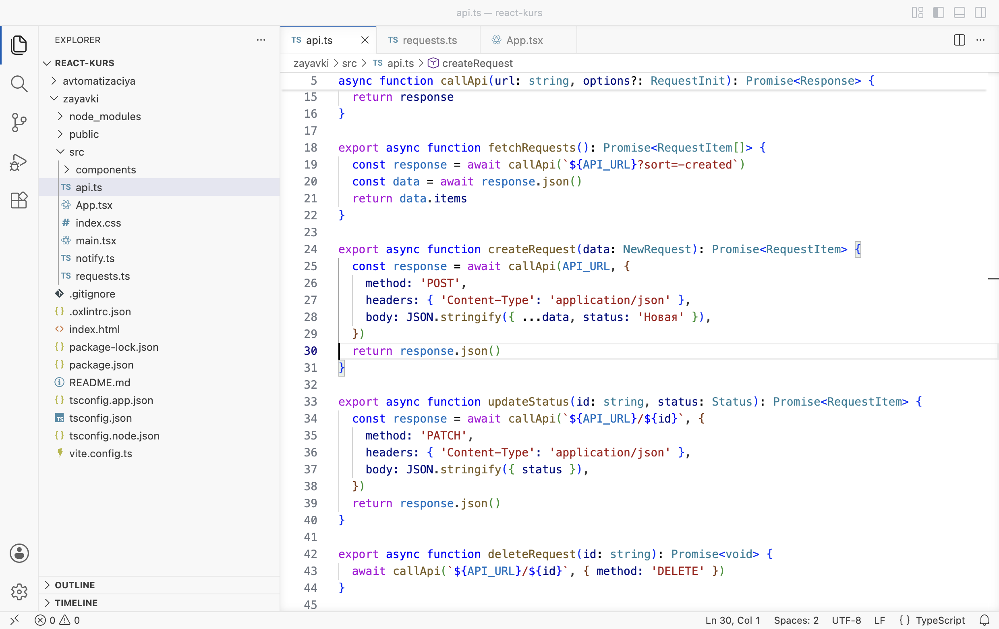
api.ts: четыре функции запросов - Замените App.tsx
Изменённые строки подсвечены: импорт новых функций и три обработчика —
handleNext,handleAdd,handleRemove. В карточку теперь передаётся и статус заявки (строка 140).zayavki/src/App.tsx import { useEffect, useState } from 'react' import Header from './components/Header' import RequestForm from './components/RequestForm' import RequestCard from './components/RequestCard' import { nextStatus, type NewRequest, type RequestItem, type Status } from './requests' import { createRequest, deleteRequest, fetchRequests, updateStatus } from './api' import { sendRequest } from './notify' type Filter = 'Все' | Status const FILTERS: Filter[] = ['Все', 'Новая', 'В работе', 'Готово'] function App() { const [requests, setRequests] = useState<RequestItem[]>([]) const [loading, setLoading] = useState(true) const [error, setError] = useState('') const [attempt, setAttempt] = useState(0) const [filter, setFilter] = useState<Filter>('Все') const [notice, setNotice] = useState('') const newCount = requests.filter((r) => r.status === 'Новая').length const visible = filter === 'Все' ? requests : requests.filter((r) => r.status === filter) useEffect(() => { let ignore = false async function load() { try { const list = await fetchRequests() if (!ignore) { setRequests(list) } } catch (e) { if (!ignore) { setError((e as Error).message) } } if (!ignore) { setLoading(false) } } load() return () => { ignore = true } }, [attempt]) useEffect(() => { document.title = `Новых: ${newCount} · Доска заявок` }, [newCount]) useEffect(() => { if (notice === '') { return } const timer = setTimeout(() => setNotice(''), 5000) return () => clearTimeout(timer) }, [notice]) useEffect(() => { function handleKey(event: KeyboardEvent) { if (event.key === 'Escape') { setFilter('Все') } } window.addEventListener('keydown', handleKey) return () => window.removeEventListener('keydown', handleKey) }, []) function retry() { setError('') setLoading(true) setAttempt(attempt + 1) } async function handleNext(id: string, status: Status) { try { const updated = await updateStatus(id, nextStatus(status)) setRequests((list) => list.map((r) => (r.id === id ? updated : r))) } catch (e) { setNotice((e as Error).message) } } async function handleAdd(data: NewRequest) { try { const created = await createRequest(data) setRequests((list) => [created, ...list]) setNotice('Заявка добавлена. Отправляем уведомление…') const sent = await sendRequest(created) if (sent) { setNotice('Заявка добавлена, уведомление отправлено.') } else { setNotice('Заявка добавлена, но уведомление не отправлено: сервер автоматизации недоступен.') } } catch (e) { setNotice((e as Error).message) } } async function handleRemove(id: string) { try { await deleteRequest(id) setRequests((list) => list.filter((r) => r.id !== id)) } catch (e) { setNotice((e as Error).message) } } return ( <> <Header newCount={newCount} /> <main className="board"> <RequestForm onAdd={handleAdd} /> <section className="list"> <h2>Заявки</h2> {notice !== '' && <p className="notice">{notice}</p>} <div className="filters"> {FILTERS.map((f) => ( <button key={f} className={f === filter ? 'active' : ''} onClick={() => setFilter(f)}> {f} </button> ))} </div> {loading && <p className="empty">Загрузка заявок…</p>} {error !== '' && ( <div className="load-error"> <p>{error}</p> <button onClick={retry}>Повторить</button> </div> )} {!loading && error === '' && visible.length === 0 && <p className="empty">Заявок с таким статусом нет</p>} {visible.map((r) => ( <RequestCard key={r.id} title={r.title} room={r.room} category={r.category} details={r.details} status={r.status} onNext={() => handleNext(r.id, r.status)} onRemove={() => handleRemove(r.id)} /> ))} </section> </main> </> ) } export default App
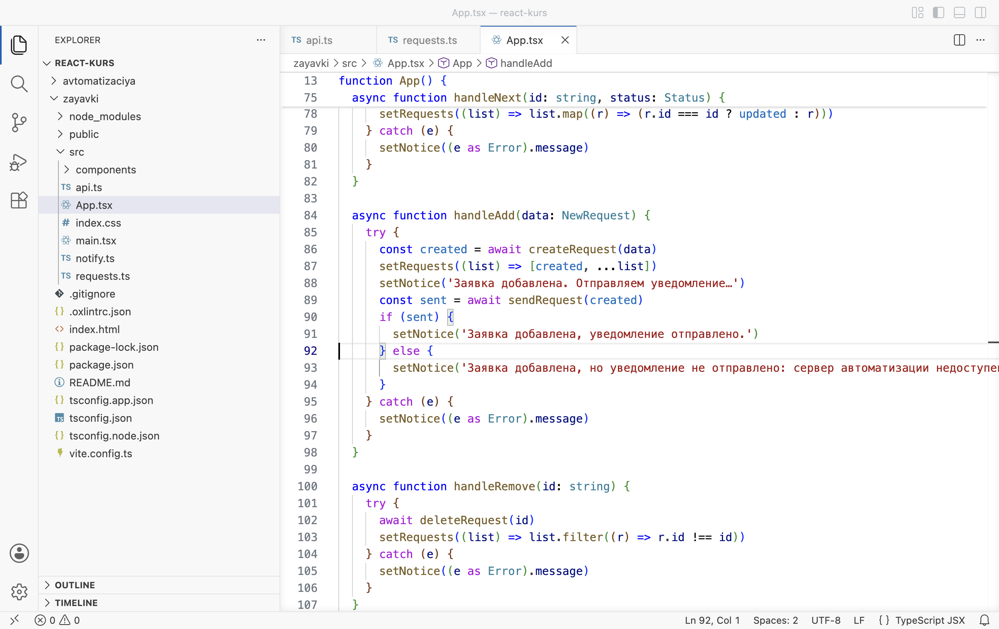
Обработчики отправляют изменения на сервер - Добавьте заявку и возьмите её в работу
Обновите доску (F5). Добавьте ту же заявку: «Не печатает принтер», кабинет 112, «Принтер». У новой заявки нажмите Взять в работу.
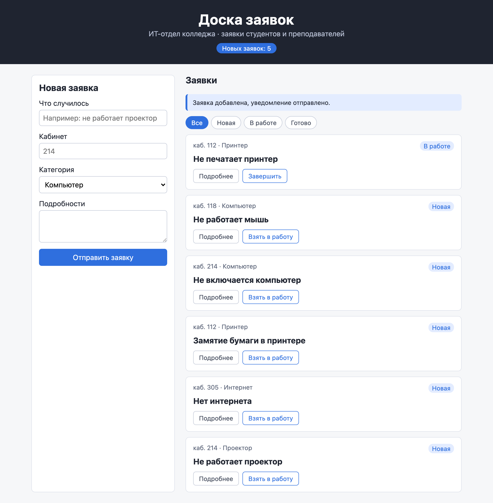
Заявка добавлена и взята в работу - Обновите страницу
Нажмите F5. Заявка на месте, статус «В работе» сохранился.
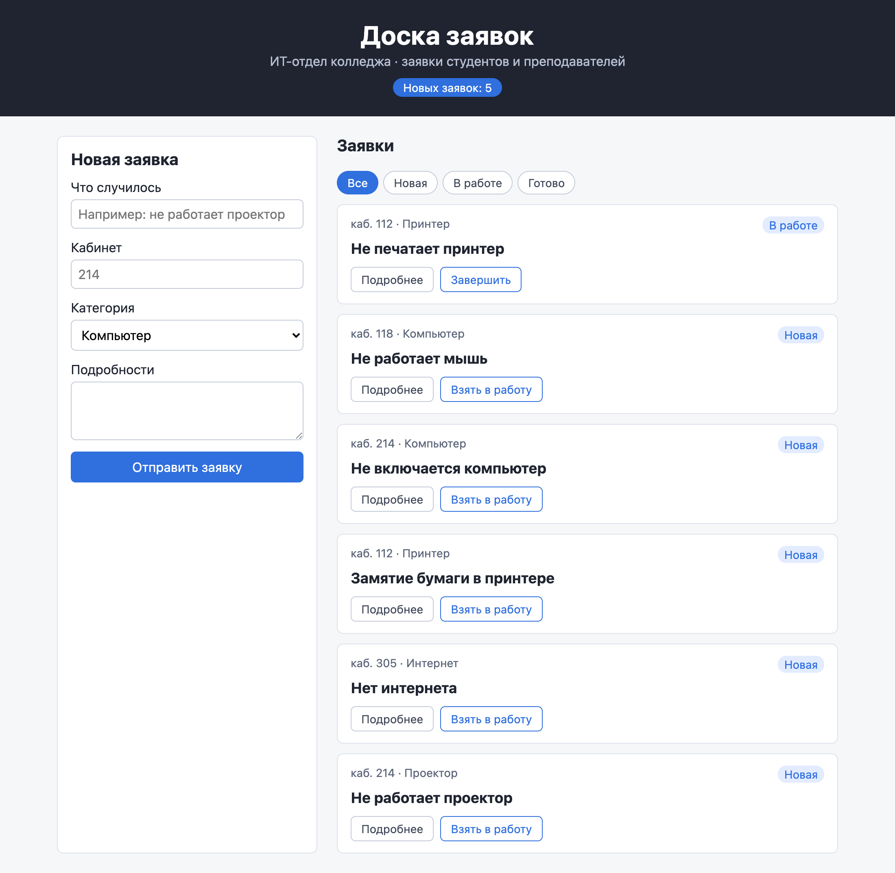
После F5 заявка и её статус остались - Посмотрите коллекцию в панели
Откройте панель PocketBase
http://localhost:8090/_/, коллекциюrequests, и нажмите кнопку обновления рядом с её названием. Записей шесть, сверху — новая. Её же увидит любой другой браузер, который откроет доску.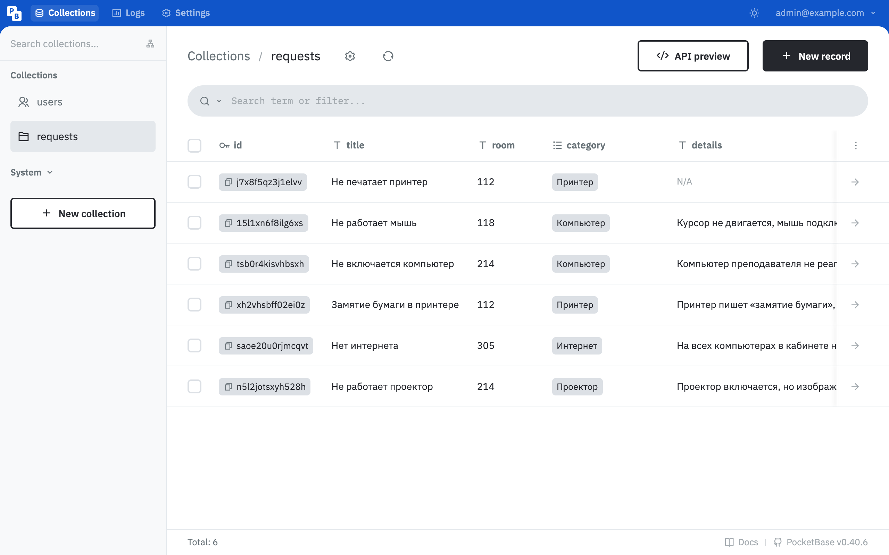
Новая заявка в базе: Total 6 - Опыт: действие без сервера
Во втором терминале остановите PocketBase командой
docker compose stop pocketbase. На доске у любой заявки нажмите Взять в работу. Статус не изменился, вверху сообщение об ошибке. Через 5 секунд оно исчезнет — это таймер из главы 2.1.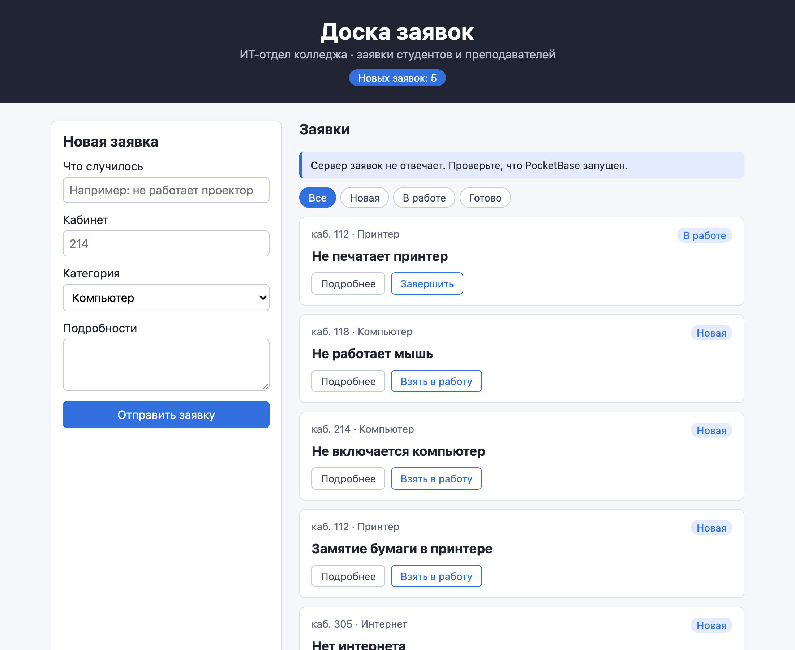
Сервер не ответил: статус не изменился, вверху сообщение - Запустите PocketBase
Выполните
docker compose start pocketbaseво втором терминале.
РазбираемсяНовые функции api.ts
export async function createRequest(data: NewRequest): Promise<RequestItem> { const response = await callApi(API_URL, { method: 'POST', 1 headers: { 'Content-Type': 'application/json' }, body: JSON.stringify({ ...data, status: 'Новая' }), 2 }) return response.json() } export async function updateStatus(id: string, status: Status): Promise<RequestItem> { const response = await callApi(`${API_URL}/${id}`, { 3 method: 'PATCH', headers: { 'Content-Type': 'application/json' }, body: JSON.stringify({ status }), 4 }) return response.json() } export async function deleteRequest(id: string): Promise<void> { await callApi(`${API_URL}/${id}`, { method: 'DELETE' }) 5 }
- 1
POSTна адрес коллекции — «создать запись», как в консоли в главе 2.2. - 2
Тело запроса — поля формы и статус «Новая». Без статуса правило Create из главы 2.2 (
@request.body.status = "Новая") отклонило бы запрос с кодом 400. В ответ PocketBase присылает созданную запись сid, функция её возвращает. - 3
PATCHна адрес одной записи — «изменить запись». Адрес собирается из адреса коллекции, косой черты иid. - 4
В теле только новый статус:
{ status }— короткая запись{ status: status }. Полей title, room и details в запросе нет, поэтому правило Update его пропускает. - 5
DELETE— «удалить запись». Правило Delete разрешает удалять только заявки со статусом «Готово», а кнопка «Убрать с доски» и показывается только у них. На удаление PocketBase отвечает кодом 204 — «выполнено, ответ пустой». Читать в нём нечего, поэтомуresponse.json()здесь не вызывается.
РазбираемсяОбработчики ждут ответа сервера
Каждый обработчик сначала отправляет запрос, а состояние меняет после await, когда ответ уже пришёл. Если сервер отказал, catch показывает текст ошибки в сообщении notice, а доска остаётся как была. Так доска не показывает изменения, которых в базе нет. Новая заявка берётся из ответа сервера: в ней id, который дал PocketBase, поэтому String(Date.now()) больше не нужен.
async function handleNext(id: string, status: Status) { try { const updated = await updateStatus(id, nextStatus(status)) 1 setRequests((list) => list.map((r) => (r.id === id ? updated : r))) 2 } catch (e) { setNotice((e as Error).message) 3 } }
- 1
Отправить новый статус и дождаться записи из базы.
- 2
Заменить в списке одну заявку на ту, что прислал сервер. Запись
r.id === id ? updated : r— тернарный оператор из главы 1.4. Еслиidсовпал, в список идёт запись с сервера, иначе прежняя заявка. ВsetRequestsпередана функция — её разбор ниже. - 3
Сервер не ответил или отказал: показать текст ошибки в сообщении над списком.
Два бухгалтера одновременно переписали отчёт со стола, каждый исправил в своей копии одну строку и положил копию обратно. На столе осталась последняя копия, и исправление первого бухгалтера пропало. Если же каждый берёт со стола текущий отчёт в момент, когда вносит правку, сохраняются обе правки.
Бухгалтеры могут договориться. В React порядок задаёт сам React: функции обновления выполняются по очереди, и каждая получает результат предыдущей.
Запись setRequests((list) => …) называется функцией обновления. React вызывает её и передаёт в list текущий список — с учётом всех изменений, сделанных к этому моменту. А requests в обработчике — список в момент нажатия. Пока шёл запрос, список мог измениться: например, ответ на нажатие по другой карточке пришёл раньше. Пошаговый разбор показывает два быстрых нажатия «Взять в работу» у разных заявок.
async function handleNext(id: string, status: Status) { try { const updated = await updateStatus(id, nextStatus(status)) setRequests((list) => list.map((r) => (r.id === id ? updated : r))) } catch (e) { setNotice((e as Error).message) } }
- Два нажатия
Мастер нажал «Взять в работу» у заявки «Мышь», затем сразу у заявки «Компьютер». Оба вызова
handleNextвидят один и тот жеrequests, где обе заявки — «Новая».МышьНоваяКомпьютерНовая - Ответ про мышь
Сервер вернул «Мышь» со статусом «В работе». Функция обновления получила текущий список и заменила в нём одну заявку.
МышьВ работеКомпьютерНовая - Ответ про компьютер
Функция обновления снова получила текущий список, уже с мышью «В работе», и заменила в нём компьютер. Сохранились оба изменения.
МышьВ работеКомпьютерВ работе - Если бы использовался requests
Запись
setRequests(requests.map(…))во втором вызове взяла бы список момента нажатия, где мышь ещё «Новая». Мышь вернулась бы на доске в «Новая», хотя в базе она «В работе». Расхождение исчезло бы только после F5.МышьНовая (неверно)КомпьютерВ работе
Правило из этого разбора: если новое состояние вычисляется из прежнего и между нажатием и сменой состояния есть await, в set-функцию передают функцию обновления. В handleAdd и handleRemove она записана так же: (list) => [created, ...list] и (list) => list.filter(…).
Уведомление в Telegram через n8n из модуля 1 осталось. handleAdd вызывает sendRequest, когда заявка уже сохранена в базе, и передаёт её с id от PocketBase.
Код загрузки занял в App.tsx четыре переменных состояния и длинный эффект. В главе 2.4 он переедет в собственный хук.
§6Частые ошибки
Сообщения получены в проекте zayavki: ошибки типов — командой npx tsc -b, остальные — в браузере с PocketBase 0.40.6.
| Что видно | Почему | Что сделать |
|---|---|---|
«Загрузка заявок…» не исчезает, в консоли Uncaught (in promise) Error: Сервер заявок не отвечает… | В эффекте нет try и catch, setLoading(false) не выполняется | Добавить try, catch и setLoading(false) после них, как в §4 |
В консоли GET http://localhost:8090/… net::ERR_CONNECTION_REFUSED | PocketBase не запущен | Запустить Docker Desktop и выполнить docker compose start pocketbase в папке avtomatizaciya |
| На доске «Сервер отклонил запрос: код 403.» | У List/Search rule стоит замок: читать могут только суперпользователи | Снять замок с правил List/Search и View, как в главе 2.2 |
| «Сервер отклонил запрос: код 400.» при добавлении заявки | Тело запроса не прошло правило Create или проверку поля: нет статуса «Новая», категории нет в вариантах Select | Сверить createRequest и варианты поля category в панели |
| «Сервер отклонил запрос: код 404.» при смене статуса или удалении | Запись не прошла правило Update или Delete, или её уже удалили в другом браузере | Обновить страницу; проверить правила коллекции |
error TS2307: Cannot find module './storage' or its corresponding type declarations. | storage.ts удалён, а App.tsx его ещё импортирует | Заменить App.tsx кодом из §3 |
error TS2322: Type 'number' is not assignable to type 'string'. | В RequestItem поле id — строка, а новой заявке дан номер Date.now() | Брать заявку из ответа createRequest; на время §3 — String(Date.now()) |
| Заявка появилась на доске, а после F5 пропала | Обработчик меняет только состояние и не отправляет запрос | Вызывать функции из api.ts, как в §5 |
§7Проверьте себя
Какие три состояния бывают у списка, который загружается с сервера?
Загрузка — ответа ещё нет. Ошибка — ответа не будет или сервер отказал. Данные — ответ пришёл, список можно показать.
Почему fetch не выбрасывает ошибку при ответе 404 и как callApi её всё-таки замечает?
Ответ 404 — это ответ: сервер работает и сообщил код. fetch выбрасывает ошибку, только когда ответа нет совсем. callApi проверяет response.ok и сама выбрасывает ошибку, если код не от 200 до 299.
Почему функцию эффекта не делают async, а объявляют внутри неё функцию load?
Функция эффекта может вернуть только функцию очистки или ничего. async-функция всегда возвращает обещание ответа, поэтому await переносят во внутреннюю функцию и вызывают её.
Что делает флажок ignore?
Очистка эффекта поднимает флажок своего запуска. Ответ, который пришёл для очищенного запуска, не попадает в состояние. В режиме разработки так отбрасывается первый из двух ответов.
Зачем в зависимостях эффекта attempt, если внутри эффекта он не используется?
Чтобы эффект запускался заново при каждом нажатии «Повторить»: retry увеличивает attempt, зависимость изменилась — React запускает эффект.
Почему в handleNext пишут setRequests((list) => …), а не setRequests(requests.map(…))?
Между нажатием и сменой состояния стоит await. За это время список мог измениться, а requests в обработчике — список момента нажатия. Функция обновления получает текущий список, и чужие изменения не теряются.
Добавьте в блок ошибки загрузки число попыток: «Попытка 2». Какую переменную показать и где?
Переменную attempt: первая загрузка идёт при attempt, равном 0, поэтому номер попытки — attempt + 1. В блоке .load-error после текста ошибки: <p>Попытка {attempt + 1}</p>.
Шпаргалка
response.ok — коды 200–299throw new Error('текст')try { … } catch (e) { (e as Error).message }let ignore = false · async function load() · return () => { ignore = true }setAttempt(attempt + 1), в зависимостях [attempt]setRequests((list) => [created, ...list])?sort=-created — новые сверхуdocker compose stop pocketbase, startИтог главы
Доска больше не хранит заявки в localStorage: список загружается из PocketBase, а добавление, смена статуса и удаление отправляются на сервер. Запросы собраны в файле api.ts. Общая функция callApi превращает в ошибку с понятным текстом оба вида неудач: сервер не ответил и сервер отказал. Загрузку отправляет эффект после первой отрисовки. Внутри него асинхронная функция load, а флажок ignore отбрасывает ответы очищенных запусков. У списка три состояния — загрузка, ошибка и данные. Их хранят переменные loading, error и requests, кнопка «Повторить» меняет зависимость attempt и запускает эффект снова. Обработчики меняют состояние только после ответа сервера и передают в setRequests функцию обновления, чтобы не потерять изменения, сделанные за время запроса.
Источники
- react.dev — useEffect: Fetching data with Effects
- react.dev — Synchronizing with Effects: Fetching data
- react.dev — useState: Updating state based on the previous state
- MDN — Response: ok property
- MDN — throw
- pocketbase.io — API Records